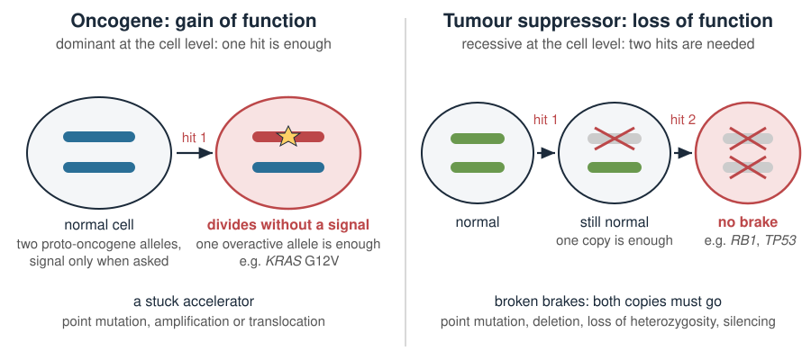
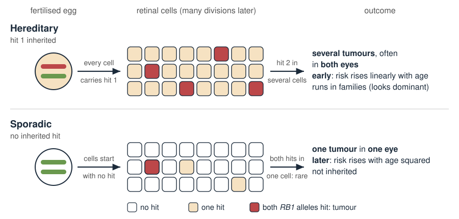
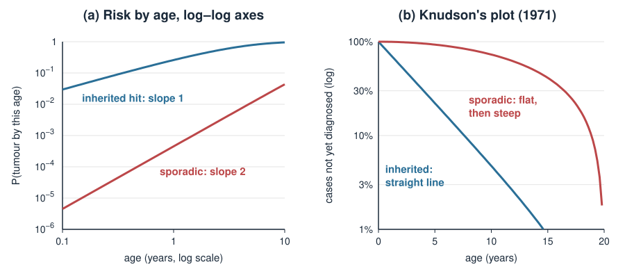
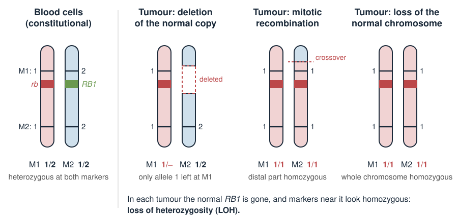
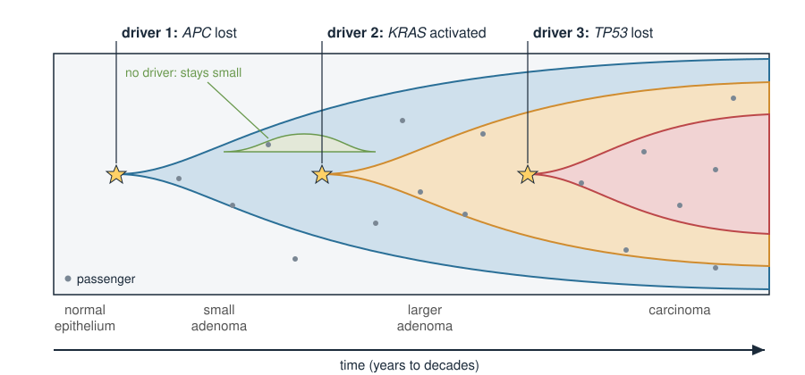
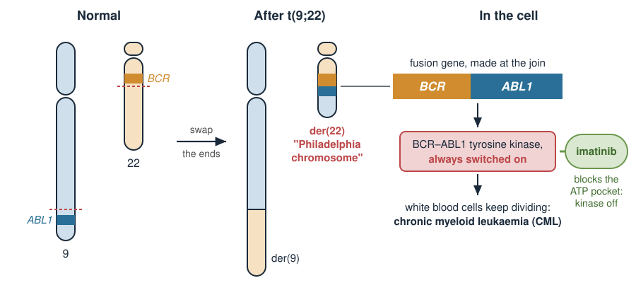

Cancer genetics
Part 7 — Cancer, populations & complex traits
About this lecture
Cancer is a genetic disease of somatic cells: a clone of cells that has collected mutations which let it divide when it should not.
- Two kinds of cancer gene: oncogenes (gain of function, dominant at the cell level) and tumour suppressors (loss of function, recessive at the cell level).
- Knudson’s two-hit hypothesis, from the ages at which children get retinoblastoma, and the two-hit model in numbers.
- Loss of heterozygosity, read from marker data, and why a “recessive” cancer gene is inherited as a dominant predisposition with incomplete penetrance (BRCA1/2), with a worked family risk.
- Mutator phenotypes, clonal evolution, and driver vs passenger mutations.
- The Philadelphia chromosome and imatinib: from a chromosome to a drug.
You already know dominance, penetrance and pedigrees from Part 1, mutation types from Part 3, and translocations from Part 5. Book: Hartwell, the chapter on the genetics of cancer.
Cancer is a genetic disease, but mostly not inherited
- A tumour is a clone: all its cells descend from one cell that escaped normal control of division.
- The mutations that drive it are mostly somatic: they arise in that cell lineage during life and are not passed to children.
- A minority of cancers (roughly 5–10%) arise in people with an inherited predisposing allele. These families give us the cancer genes.
- Most cancers are diseases of old age: a cell must collect several mutations, and that takes time.
| Germline mutation | Somatic mutation | |
|---|---|---|
| In which cells | every cell, including gametes | one cell and its descendants |
| Passed to children | yes | no |
| Example | inherited RB1 allele | KRAS G12 in a colon polyp |
Accelerators and brakes

- Proto-oncogenes promote division when the cell is told to (growth-factor receptors, RAS, MYC). A gain-of-function mutation makes an oncogene: one mutant allele is enough, so it is dominant at the cell level.
- Tumour suppressors stop division or kill damaged cells (RB1, TP53, APC). A cell becomes abnormal only when both copies are lost: recessive at the cell level.
How a proto-oncogene becomes an oncogene
Three routes, all gain of function:
- Point mutation that locks the protein on. KRAS codon 12 (G12V, G12D): RAS can no longer switch itself off, so it signals all the time.
- Amplification: many copies of a normal gene, so too much protein. ERBB2 (HER2) in some breast cancers; MYC in some neuroblastomas (MYCN).
- Translocation that puts a gene under a strong promoter, or fuses two genes. BCR–ABL1 in chronic myeloid leukaemia (end of this lecture).
Each needs only one allele, which is why oncogenes are rarely inherited: an always-on allele in every cell is usually lethal to the embryo.
Retinoblastoma: two forms of one cancer
Retinoblastoma is a tumour of the developing retina, in young children.
| Hereditary (about 40%) | Sporadic (about 60%) | |
|---|---|---|
| Family history | often; autosomal dominant pattern | no |
| Eyes | usually both (bilateral) | one (unilateral) |
| Tumours | often several | one |
| Age at diagnosis | earlier | later |
In 1971 Alfred Knudson asked: what single model explains all four rows?
Knudson’s two-hit hypothesis

- A retinal cell becomes a tumour only when both alleles of one gene are lost: two hits. The gene is RB1, on 13q14.
- Hereditary: hit 1 is in the germline, so every retinal cell already has it. One more hit in any of millions of cells is likely: many tumours, both eyes, early.
- Sporadic: both hits must strike the same cell by chance. That is rare: one tumour, one eye, later.
Knudson’s argument from the ages at diagnosis

- One hit needed: risk by age t ≈ n·u·t, linear in age. Two hits needed: ≈ n·(u·t)², quadratic. On log–log axes the slope counts the hits (a).
- Knudson plotted the fraction of cases not yet diagnosed on a log scale (b). Bilateral cases fell on a straight line, as for a single event at a constant rate; unilateral cases did not.
The two-hit model in numbers
A simple model eye: n = 10⁶ retinoblasts, and each RB1 allele in a cell is hit with probability u = 10⁻⁶ while the cells divide (round numbers for illustration).
Carrier (one hit inherited, one more needed per cell):
- Expected tumours per eye = n u = 10⁶ × 10⁻⁶ = 1; both eyes: 2.
- Rare events in many cells: P(no tumour) ≈ e−expected number = e−2 = 0.14, so penetrance ≈ 0.86.
- Both eyes affected: (1 − e−1)² = 0.63² = 0.40.
Non-carrier (two hits needed in the same cell):
- Expected tumours, both eyes = 2n u² = 2 × 10⁶ × 10⁻¹² = 2 × 10⁻⁶: about 1 child in 500 000, and almost never bilateral.
Demo: two hits
Loss of heterozygosity

- In a carrier, the second hit is often not a new point mutation but the loss of the normal allele, together with a stretch of chromosome around it.
- Markers near the gene are heterozygous in blood but homozygous in the tumour: loss of heterozygosity (LOH).
- A region with frequent LOH in tumours is a hint that it contains a tumour suppressor. RB1 and many other genes were found this way.
Reading LOH from marker data: a worked example
Five markers along one chromosome arm, from the centromere outwards; the tumour suppressor lies between M3 and M4. Blood and tumour DNA from one patient:
| Marker | M1 | M2 | M3 | M4 | M5 |
|---|---|---|---|---|---|
| Blood | 1/2 | 3/4 | 2/5 | 1/3 | 4/6 |
| Tumour | 1/2 | 3/4 | 2 | 1 | 4 |
- Where? M1 and M2 stay heterozygous; M3 to M5 lose an allele. The lost region starts between M2 and M3 and runs to the end of the arm, and it covers the gene.
- How? Not loss of the whole chromosome (M1, M2 still heterozygous). A terminal deletion leaves 1 copy of M3–M5; mitotic recombination between M2 and M3 leaves 2 identical copies. A copy-number measurement tells them apart.
- Which parent’s allele is kept? If the mother is 2/2 at M3 and the father 5/5, the tumour kept the maternal chromosome, so the inherited mutant allele most likely came from the mother.
Recessive in the cell, dominant in the pedigree
A retinoblastoma family looks autosomal dominant: about ½ of the children of a carrier are affected, in every generation. Yet the allele is recessive in each cell. Both are true:
- What is inherited is a predisposition, a first hit in every cell.
- The second hit is so likely in a carrier that most carriers are affected. Some carriers get no tumour: incomplete penetrance (recap: Extensions to Mendel), and the pedigree then skips a generation.
- Inherited breast and ovarian cancer works the same way: germline BRCA1 (17q21.31) or BRCA2 (13q13.1), with LOH of the normal allele in the tumour. Lifetime risk is high, but not 100%.
Incomplete penetrance in a family: a worked risk
A dominant cancer predisposition with penetrance 0.8 (round number). An affected carrier has children with a non-carrier.
- Child’s risk of disease: P(inherits the allele) × penetrance = ½ × 0.8 = 0.40.
- A daughter is now an adult and unaffected. Is she a carrier? Use conditional probability (probability unit):
| prior | P(unaffected | this) | product | |
|---|---|---|---|
| carrier | ½ | 1 − 0.8 = 0.2 | 0.10 |
| non-carrier | ½ | 1 | 0.50 |
P(carrier | unaffected) = 0.10 / (0.10 + 0.50) = 1/6.
- Her child’s risk: 1/6 × ½ × 0.8 = 1/15 (about 7%), although she herself never had the disease: the skipped generation of the pedigrees unit.
Caretakers and the mutator phenotype
Some tumour suppressors do not control division directly. They repair DNA, so losing them raises the mutation rate of the cell: a mutator phenotype.
- Mismatch repair (MLH1, MSH2): replication errors are not fixed. Inherited loss gives Lynch syndrome (colorectal and endometrial cancer); tumours carry thousands of small mutations.
- Homologous recombination (BRCA1, BRCA2): double-strand breaks are repaired by error-prone routes, giving rearrangements.
- TP53, “guardian of the genome”: senses DNA damage and stops the cell cycle or triggers apoptosis. It is the most frequently mutated gene in human cancer.
A mutator phenotype does not cause cancer itself; it speeds up the collection of the other hits.
Clonal evolution: drivers and passengers

- Each driver mutation gives its cell a growth advantage, so its descendants take over: selection among cells. The colorectal sequence APC → KRAS → TP53 is the classic example.
- Passenger mutations happen by chance in the same cells and are carried along. They have no effect, but they are the majority of mutations in a tumour.
- So a tumour evolves: mutation, selection and drift in a population of cells. This is the topic of the next two units.
The Philadelphia chromosome under the microscope

_translocation.jpg){kind=link}
A partial karyotype from the bone marrow of a patient with chronic myeloid leukaemia: the two chromosomes 9 and the two chromosomes 22, G-banded.
- In each pair, the right-hand chromosome (arrowhead) is the rearranged one: the end of 9q now carries material from 22, and 22 has lost most of its long arm.
- The short 22 is the Philadelphia chromosome, der(22).
- Nothing is lost: the ends were swapped, a balanced reciprocal translocation.
The Philadelphia chromosome

- In chronic myeloid leukaemia (CML) a small chromosome 22 was seen in 1960 (Nowell and Hungerford, Philadelphia). It is a reciprocal translocation t(9;22)(q34;q11).
- The join fuses BCR (22q11.23) to ABL1 (9q34.12): a BCR–ABL1 tyrosine kinase that is always on.
- Imatinib blocks the ATP pocket of the kinase. It turned CML from a fatal disease into a manageable one: the first big success of a drug designed against a cancer’s driver.
Cancer genomes in public databases
Tumours are sequenced by the thousand. You can browse the results without writing code:
- cBioPortal (cbioportal.org): mutations, copy number and survival for public studies such as TCGA PanCancer Atlas. A lollipop plot shows where in the protein the mutations fall.
- COSMIC Cancer Gene Census (Sanger, free registration) and OncoKB (MSK): which genes are cancer genes, and whether each acts as an oncogene or a tumour suppressor (TSG).
- The pattern tells you the role: oncogenes have hotspots (the same codon in many tumours, KRAS G12); tumour suppressors have truncating mutations spread along the gene, plus some hotspots (TP53 R175H).
Common mistakes
| Mistake | Correct |
|---|---|
| “Cancer is genetic, so it is inherited” | most driver mutations are somatic; only a minority of patients inherit a first hit |
| “Tumour suppressor alleles are recessive, so carriers are not at risk” | recessive in the cell; in the person the second hit is so likely that the predisposition is dominant |
| “A dominant predisposition means every carrier gets cancer” | penetrance is incomplete: unaffected carriers exist and can transmit the allele |
| “Inherited cancer genes are oncogenes” | mostly tumour suppressors: an activated oncogene in every cell is usually not compatible with normal development |
| “LOH is a new point mutation” | LOH is loss of the normal allele, often with a stretch of chromosome (deletion, mitotic recombination, chromosome loss) |
| “Most mutations in a tumour cause the cancer” | most are passengers; drivers recur across tumours |
Summary
- Cancer is a clone of cells with somatic mutations; a minority of patients carry an inherited first hit.
- Oncogenes: gain of function, one allele enough (dominant at the cell level). Tumour suppressors: loss of function, both alleles (recessive at the cell level).
- Knudson: hereditary retinoblastoma needs one more hit (early, bilateral, multiple, risk ∝ age); sporadic needs two in one cell (late, unilateral, single, risk ∝ age²). Expected tumours nu vs nu²; P(none) ≈ e−expected.
- The second hit is often loss of heterozygosity, read as markers heterozygous in blood but not in the tumour. An inherited cell-recessive allele gives a dominant predisposition with incomplete penetrance (RB1, BRCA1/2); unaffected relatives’ risks need conditional probability.
- Mutator phenotypes raise the hit rate; clonal evolution selects drivers; passengers come along.
- t(9;22) makes BCR–ABL1; imatinib targets it.
Where this leads
- Next: Hardy–Weinberg and Drift, selection treat allele frequencies in populations of people. A tumour is a population of cells that evolves by the same rules: mutation, selection, drift.
- Part 1 links: penetrance and pedigrees explain why cancer predisposition looks dominant.
- Ethics: predictive testing for BRCA1/2 and other cancer genes, and what a positive result means for relatives.
- In the exercise: two-hit problems by hand, the demo, RB1 in NCBI Gene, TP53 in cBioPortal and OncoKB, and the two-hit model in R.